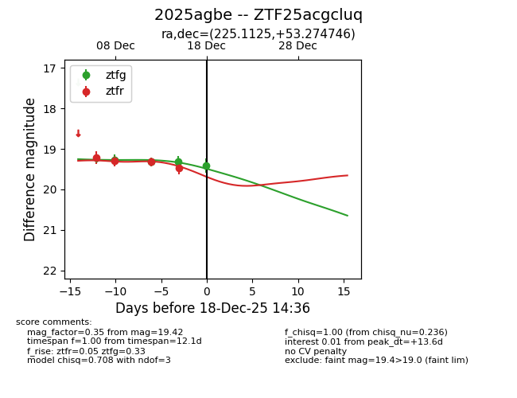
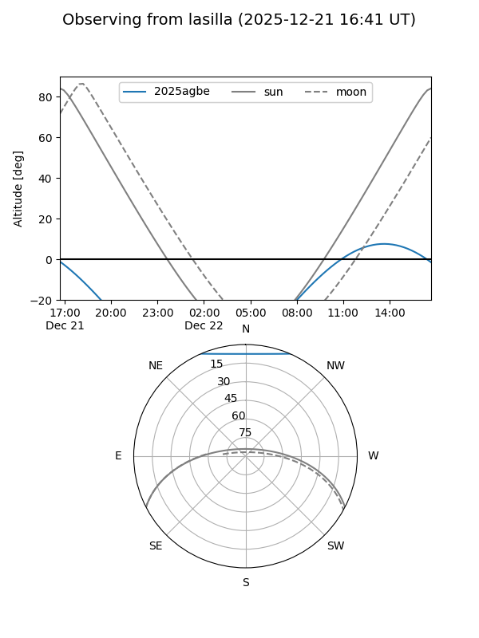
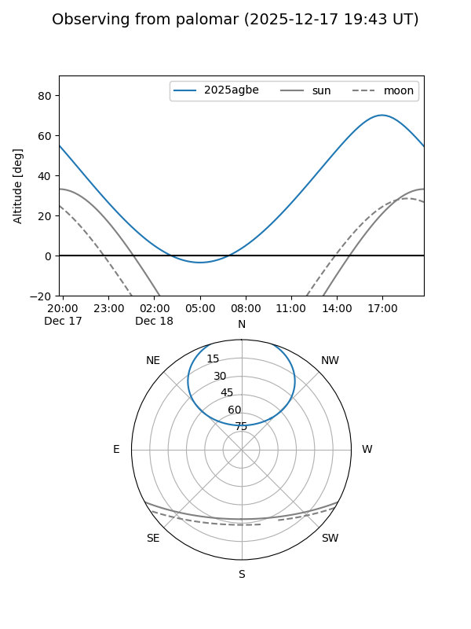
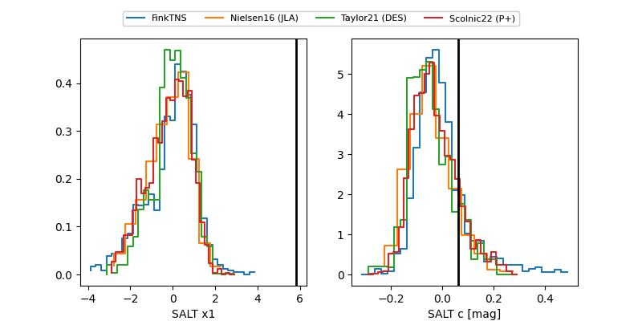

2025agbe
Target 2025agbe at 2025-12-21 13:57
Aliases and brokers:
FINK: fink-portal.org/ZTF25acgcluq
Lasair: lasair-ztf.lsst.ac.uk/objects/ZTF25acgcluq
ALeRCE: alerce.online/object/ZTF25acgcluq
TNS: wis-tns.org/object/2025agbe
YSE: ziggy.ucolick.org/yse/transient_detail/2025agbe
alt names
ZTF25acgcluq (ztf,fink_ztf)
2025agbe (tns,yse)
Coordinates:
equatorial (ra, dec) = 225.1125,+53.27475
equatorial (HMS+DMS) = 15:00:27.00,+53:16:29.09
galactic (l, b) = (89.4651,+54.64204)
Flags:
Photometry:
last ztfg=19.42, ztfr=19.59
4 ztfg, 6 ztfr detections
Lightcurve

Visibility


Additional plots
